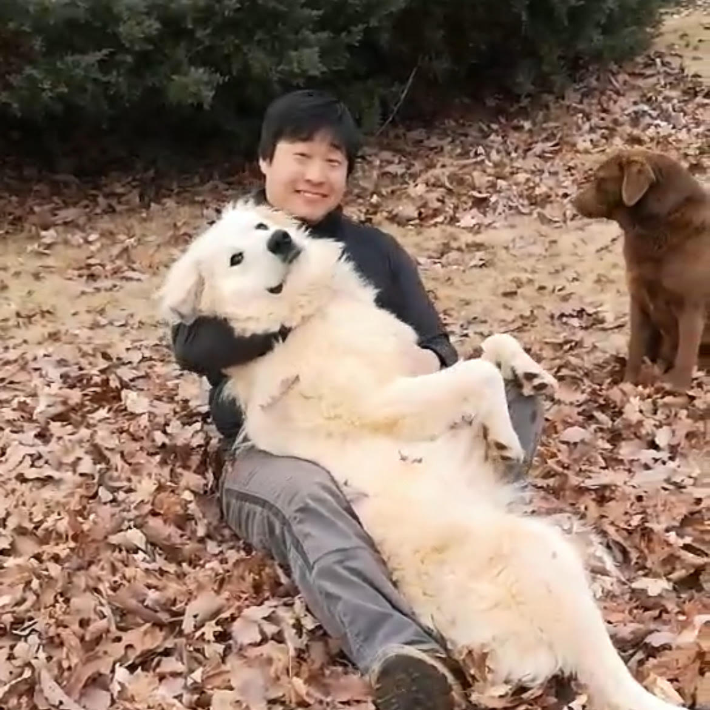

Roy Cai

Hello!
I'm Roy - a Dynamic and results-oriented UX designer with 12 years of experience in creating
intuitive and visually appealing digital experiences. Proven track record of leveraging user-centric
design & research principles to deliver innovative solutions across various platforms. Proficient in high
fidelity designs for immersive testing using tools such as Figma, Adobe Creative Suite, and Protopie. I am
currently Web Development to gain a better understadning in this field in order to streamline my work with
developers in the future. Passionate in learning new skills and I am always open to new opportunities to
collaborate.
Education
XD Designer - Trane Technologies
As a UX & UI Design for the Prodeus thermostat project, I orchestrated a comprehensive redesign
initiative for a decade-old device, leveraging user feedback, market insights, and technological
advancements to revolutionize home comfort usability and set a new standard of innovation in the
industry.
- Designed an IoT system facilitating seamless data exchange between thermostat devices and cloud platforms.
- Conducted usability tests using high-fidelity interactive prototypes in Figma, analyzed user feedback, and iterated UI designs accordingly.
- Create designed for PHP platforms templates for developers to seemlessly transfer designs to code.
- Proven experience advocating for and completing design work that has a measurable impact on both user experience and business performance indicators.
- Apply HCI principles, ADA experience standards, user-centered design principles and usability best practices.
UX/UI Designer - CorDx
As the lead designer of the Atlanta marketing department, I spearheaded efforts to develop and
enhance the company’s brand identity, collaborating closely with international teams to ensure
a cohesive approach. Through this collaboration, we crafted compelling visual narratives that
resonated with our target audience and reinforced our global presence.
- Translated user insights into tangible design concepts with a focus on consistency.
- Collaborated with various departments to design webpage layouts, marketing campaign creative, component design for web, and website management on WordPress.
- Presented projects and storyboards to stakeholders for review and feedback.
Digital Technology Teacher - Genesis Innovation
- Developed a coding course curriculum integrating fundamental visual design principles alongside instruction in Python, JavaScript, and HTML/CSS, tailored to align with a STEMbased educational framework.
- Employed a diverse range of instructional techniques and media to effectively guide students towards achieving curriculum objectives and fostering learning outcomes (TKES 6, 7, 8).
Lead Graphic Designer - RecRoom Masters
- Conducts in-depth research to generate unique designs for branded collateral, encompassing digital designs for both print and online product promotions.
- Demonstrates proficiency in professional editorial layout design, typography, and meticulous attention to detail.
Lead Graphic Designer - Ellijay Mushrooms
- Led the company’s digital marketing and promotional outreach efforts, shaping the direction for all marketing initiatives including location menus, in-store marketing materials, and graphic designs.
Graphic Design Teacher - Huijia Education Organization
- Developed an art course program for both PYP and MYP that follows International Baccalaureate (IB) guidelines to enhance the education and excitement of students.